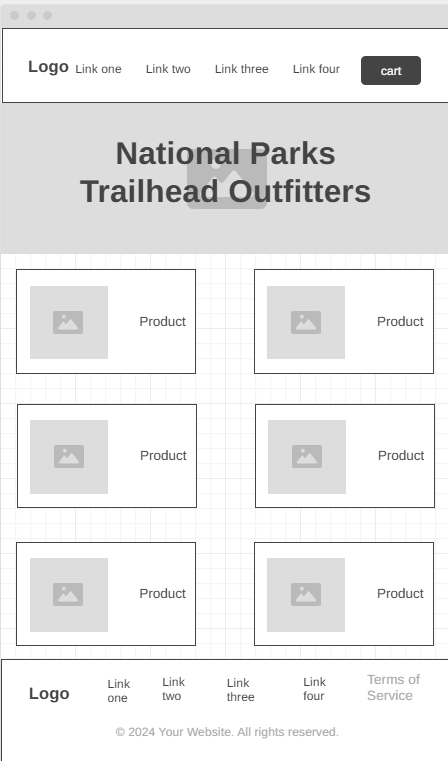
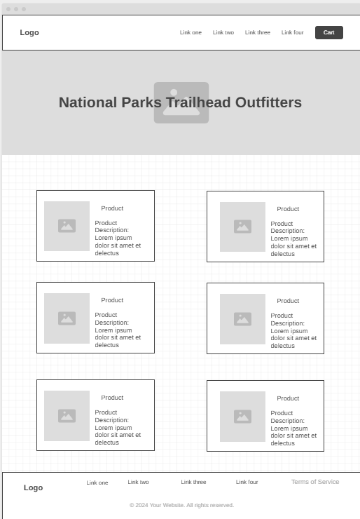
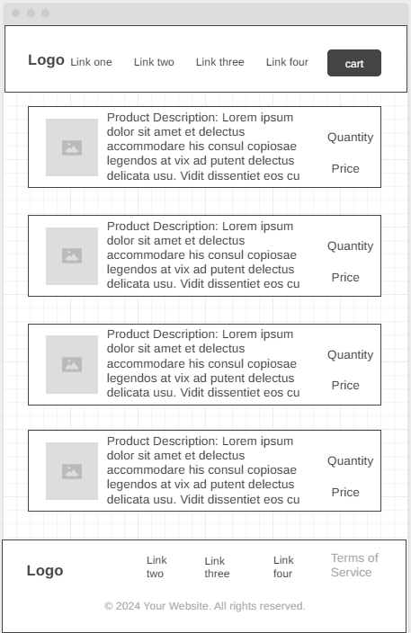
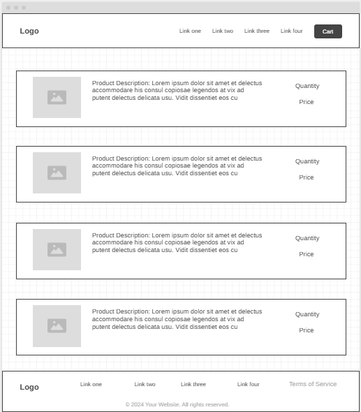

Product Catalog Mobile Wireframe

Planning page for a National Park Service inspired outdoor gear storefront. The goal is to help visitors browse products, view specific details, and simulate ordering equipment.
NPS Trailhead Outfitters will be a clean, user-friendly storefront for national park inspired outdoor gear. Users will be able to browse a grid of dynamic product cards, dive into a distinct details view using URL state management parameters, and complete simulated checkout transactions via a validation form. The layout uses responsive design techniques to remain accessible and highly scannable on mobile, tablet, and desktop viewports.
These wireframes show the planned mobile and desktop layouts, including the header/navigation, main content area, cards/lists, details workspace, forms, footer, and major UI sections.




The palette uses forest green and warm earth tones to connect the site to national parks, trail signs, trees, sunlight, and outdoor equipment. The colors are chosen to keep text readable against light backgrounds.
Georgia will be used for headings. It has a classic outdoor guidebook feeling and gives the site a more planned look than a default sans-serif heading.
Arial will be used for body text. It is easy to read, widely available in browsers, and works well for product cards, forms, buttons, and checkout elements.
The final website will avoid Times New Roman as the default page font and will keep text sizes consistent for readability.
Bootstraps the home view app context, initialises file fetch chains, and displays root interface elements.
Coordinates the individual product display page, handles the URL parameter parsing, handles form field structural validation, and manages order execution events.
Acts as an asynchronous engine using the Fetch API to load clean product catalog definitions from products.json while seamlessly surfacing loading/error indicator tags.
Pure UI rendering layer that processes Javascript data collections into semantic template strings to dynamically paint the DOM framework blocks.
Encapsulates interaction with local storage utility functions, keeping track of cumulative simulated total counts and the user's recently viewed items pipeline history.
The store catalog is maintained inside a unified local array map file. Each single entity contains discrete identification strings, categories, descriptive statements, pricing decimals, and system assets references.
{
"id": "tent01",
"name": "2-Person Backpacking Tent",
"description": "Lightweight tent for backcountry camping.",
"image": "images/tent.jpg",
"price": 129.99,
"category": "Camping"
}
The website utilizes web storage components to persist key state markers safely over browser loads. Upon validating and processing a simulated order request, an entry counter key is incremented sequentially (e.g. totalOrders). Additionally, tracking pipelines can automatically cache recently clicked product IDs via a tracking array (recentlyViewed) to dynamically present history options back to users.